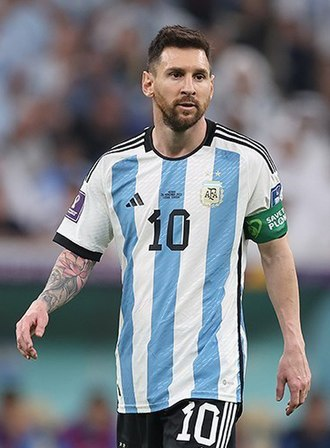

Lionel Messi remains the undisputed king of the football world, though it would be foolish not to raise an eyebrow as he grows older. As an individual talent and based on almost two decades of cold, objective data and warm, unquantifiable magic, he is the best. Not only the best right now, but the best of all time.
Robert Lewandowski is one of the most in-form players in the world right now, there is simply no doubt about it. And he has been for some time. It feels like a great disgrace that he hasn't lifted a ballon d'Or in his berserk career. The Polish icon boasts a well-balanced portfolio of pace, strength and technical ability, and his movement in the box is sublime. His positioning is always on point and there's no-one you'd rather trust in a one-on-one situation.
In terms of raw effectiveness, you could argue Salah should sit ahead of Kevin De Bruyne, but in terms of the complete package, skill-set, technical ability, physical merits and mental toughness, De Bruyne may well be the No.1 complete footballer in the world today. He is the best crosser of a football in Premier League history and has played some of the most outrageous passes you're ever likely to see. On top of creating goals, he can also rip nets from their stanchions himself.
Haaland's main competitor for the title of 'best player in the world' is without a doubt Kylian Mbappe. The top three players on this list are all 29 and older, paving the way for the Frenchman to dominate for years to come. He boasts acceleration that would put Doc Brown's DeLorean to shame and at the age of 23 he already boasts 110 goals in 117 PSG league games and 27 goals in 57 France national team caps.
We reach the first player on the list with extremely strong potential to reach the hallowed No.1 spot on this list within a few years. Haaland has been magnificent since exploding onto the professional football scene. He was prolific at Red Bull Salzburg and made a mockery of the Bundesliga in a Dortmund shirt. He scored 86 goals in 89 games for the latter.